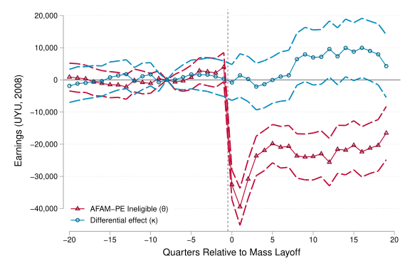

This paper asks how income support during childhood shapes women’s lives as they become adults. Using eighteen years of administrative records from Uruguay, I compare similar children who received different amounts of support. Women who received more support were less likely to become mothers as teenagers, more likely to enter work early and attend tertiary education, and ultimately accumulated more employment and earnings. These changes placed them on later fertility paths and reduced the lasting career costs associated with motherhood. The gains were large enough that higher future tax contributions eventually offset the cost of the program. Overall, the results show that childhood income support can reshape women’s family and career trajectories, promoting social mobility and reducing gender inequality.
PANES/AFAM-PE Effects on women's fertility and labor-market outcomes.
with Marcelo Bérgolo, Gabriel Burdín, Mauricio De Rosa, Martín Leites, and Horacio Rueda — Revise & Resubmit, Journal of the European Economic Association
Expand
This paper asks how top earners respond when personal income tax rates increase. Using a 2012 tax reform in Uruguay and linked administrative records, we compare individuals within the top 1% who faced different changes in tax rates. We find that top earners reduced the income reported under the personal labor income tax, but much of the response came from shifting income toward corporate and capital income, which were taxed at lower rates. The reform increased tax revenue and generated relatively modest efficiency costs, but had only limited effects on inequality. The findings suggest that raising top tax rates is more effective when accompanied by policies that limit opportunities to shift income across tax bases.
with Marcelo Bérgolo, Mery Ferrando, and Joan Vilá
—
Preliminary Report — IDB Working Paper No. IDB-WP-1852, 2026
Expand
This paper asks how different social protection programs help workers cope with job loss. Using administrative records from Uruguay, we study workers affected by mass layoffs and compare the protection offered by traditional unemployment insurance and a cash transfer program for low-income households. We find that employment partly recovers after displacement, but earnings fall sharply and remain lower for years. The cash transfer program provides substantial protection for vulnerable and middle-income workers, while unemployment insurance does not produce comparable medium-term gains. The results suggest that cash transfers can play an important role in protecting workers from the lasting consequences of job loss.

Earnings around mass layoff, by AFAM-PE eligibility.
This paper asks how students’ beliefs about the value of academic credentials shape who earns them. In a field experiment, we correct students’ mistaken beliefs about the labor-market value of academic honors and combine this with information on how costly it is for each student to improve their grades. Students understand how honors are awarded but greatly underestimate their value. Correcting these beliefs increases honors attainment only among students close to the cutoff and facing relatively low effort costs. The new honors recipients are mostly high-productivity students who plan to show the credential to employers, without lowering the overall quality of the honors group. The results suggest that even transparent credential systems may not work as intended when students underestimate the value of the credential.
Information treatment effect on probability of obtaining a Bien mention by GPA and productivity.
These projects are at an earlier stage. Drafts and links will be added as they become available.
Warnings and Tax Compliance: Evidence from Inheritance Tax Reporting in Brazil
with Gedeão Locks and Ricardo Perez-Truglia — Work in progress
This project studies how warning taxpayers about potential discrepancies between self-reported and third-party information affects compliance with inheritance tax reporting in Brazil.
The Consequences of Mass Suspensions in Cash Transfer Programs: Evidence from the Enforcement of Education Conditionalities in Asignaciones Familiares - Plan de Equidad
with Marcelo Bérgolo, Maria Sauval, and Mariana Zerpa — Work in progress
This project examines what happens when families are suspended from a conditional cash transfer program for failing to meet school-attendance requirements, using administrative data from Uruguay to study the medium- and long-run consequences for children's educational and economic outcomes.
Long-Term Dynamics of Income and Health Inequality in Finland
with Tuomas Kosonen, Krista Kuuttiniemi, Miika Päällysaho, Jukka Pirttilä, and Asfand Yar Khan — Work in progress
This project studies the long-term dynamics of income and health inequality in Finland using administrative data since the 1970s, including the intergenerational transmission of health and the growth of socioeconomic gradients in health outcomes.
Charging Infrastructure and Electric Vehicle Adoption: Experimental Evidence from Randomized Station Placement
with Jarkko Harju, Tuomas Kosonen, Marita Laukkanen, and Kimmo Palanne — Work in progress
This project studies how the placement of electric-vehicle charging infrastructure affects household adoptionof EVs, using a randomized station-placement design.
This site uses cookies from Google to deliver its services and to analyze traffic. Information about your use of this site is shared with Google. By clicking “Accept”, you agree to its use of cookies. Cookie Policy
![Figure showing estimated program effects on women’s fertility and employment at each age. Fertility effects are negative and largest between ages 15 and 19. They remain negative through the early twenties, begin to diminish around age 25, and are close to zero by age 30. Employment effects follow the opposite pattern: gains are largest at the ages when fertility reductions are strongest and also begin to fade around age 25. The two age profiles therefore broadly mirror one another, with lower fertility and higher employment during the late teens and early twenties and smaller effects at older ages.](assets/img/dynamic_effects_women.png)
![Line graph showing the evolution of average log gross labor income reported to the personal labor income tax base for the treatment and control groups from 2009 onward. The two groups follow similar trends before the reform. In 2011, the treatment group’s reported income rises relative to the control group, consistent with anticipatory income shifting. In 2012, the treatment group’s reported income falls sharply relative to the control group, creating a persistent gap that remains broadly stable in subsequent years.](assets/img/labor_income_trends_by_treat_mtr_all.svg)
![Figure showing the estimated effect of information feedback on the probability of obtaining a Bien mention, by students’ pre-treatment GPA and productivity classification. Treatment effects are concentrated among high-productivity students whose initial GPA was just below the 14-out-of-20 Bien threshold. High-productivity students are those who reported needing relatively few additional study hours to reach the threshold. Effects are small or absent for students farther from the threshold and for students classified as low productivity.](assets/img/ATE_on_mention_by_GPA_and_productivity.svg)